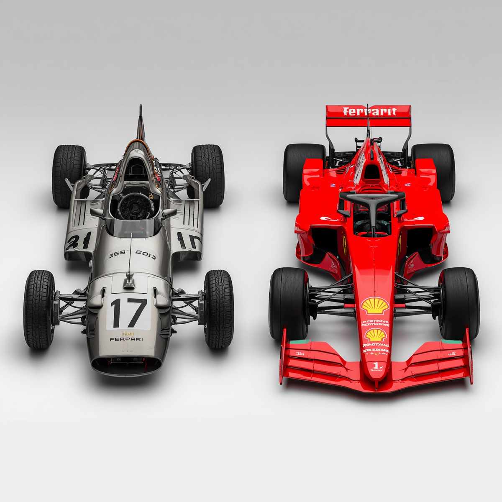

Formula 1 e sua história
A Evolução dos Carros (Das "Baratas" aos Monstros de Fibra de Carbono) Se você olhar para um carro de Fórmula 1 da década de 1950 e para um atual, vai achar que um deles veio do espaço. Nos primórdios da categoria, os pilotos corriam a mais de $200\text{ km/h}$ em carros que pareciam charutos com rodas, usando capacetes que lembravam toucas de banho e praticamente nenhuma proteção. Era o puro suco da coragem (e da loucura). Corte para o presente: os carros atuais são verdadeiros caças de combate terrestre feitos de fibra de carbonos leves, ultra-resistentes e entupidos de sensores. Eles são desenhados para grudar no chão; em teoria, a aerodinâmica atual é tão bizarra que, se você pilotasse um F1 moderno de cabeça para baixo no teto de um túnel em alta velocidade, ele continuaria grudado. Só não recomendamos testar isso no mundo real.

Circuitos Lendários (Onde a História é Escrita) O calendário da Fórmula 1 viaja o mundo todo, mas existem pistas que têm alma. Correr em Mônaco, por exemplo, é o equivalente a pilotar um caça dentro da sua sala de estar. As ruas são tão estreitas que os pilotos raspam os muros a cada curva, provando que o glamour do principado anda de mãos dadas com a adrenalina pura. Do outro lado do espectro, temos o templo da velocidade em Monza, na Itália, onde os motores gritam no limite nas retas infinitas. E, claro, não podemos esquecer de Interlagos, aqui no Brasil. Com seu traçado icônico no sentido anti-horário e o clima completamente maluco que vai de "sol de rachar" a "dilúvio universal" em três minutos, São Paulo sempre entrega corridas que fazem o coração do torcedor errar as batidas.